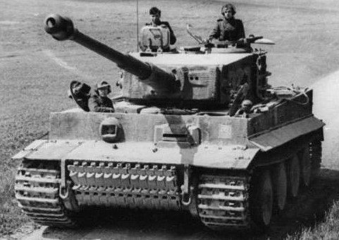
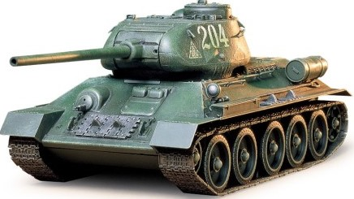

Bestia wyposażona była w 12 cylindrowy silnik o mocy 650KM. Uzbrojony w Działo kalibru 88mm, które bez problemu przebijało pancerz dominującego wtedy T-34.Podczas drugiej wojny światowej, okazało się konieczne wybudowanie pojazdu zdolnego niszczyć nowe radzieckie czołgi, po tym jak zauważono, że pancerz niemieckich PzKpfw III oraz PzKpfw IV jest z łatwością przebijany przez T-34, które bez problemu je niszczyły. Wtedy odkryto również, że działo przeciwlotnicze Flak 36 kal.88 mm wykazuje się niezwykłą skutecznością w niszczeniu T-34. Niemcy postanowili więc stworzyć czołg ciężki wyposażony w tę właśnie armatę i w taki sposób narodził się pomysł na czołg PzKpfw VI Tiger.
Tiger I - Niemiecka precyzja
ZSRR T-34-85
Czołg średni konstrukcji radzieckiej z okresu II wojny światowej. W 1943 roku pojawił się problem niewystarczającego uzbrojenia głównego czołgu Armii Czerwonej – T-34. Niemcy wprowadzili w tym czasie do akcji nowe typy czołgów. Były to głównie wozy typu Panther i Tiger z nowymi armatami kal. 75 i 88 mm. Także popularny na froncie czołg Panzerkampfwagen IV, otrzymał nową długolufową armatę kal. 75 mm. Dowództwo radzieckie doszło do wniosku, że także T-34 należy wyposażyć w działo o większej sile ognia.